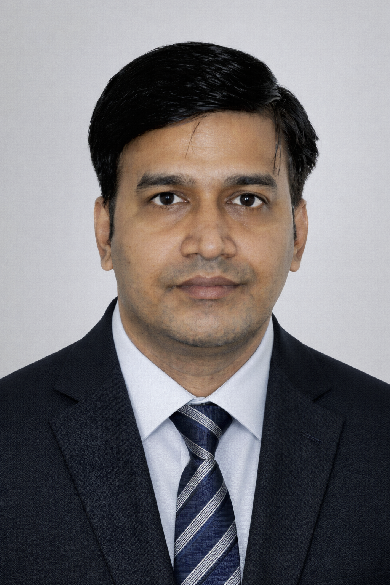

Welcome to my portfolio
Exploring the dynamics of mesoscale oceanic eddies and their impacts on the Bay of Bengal through advanced numerical modelling.
↓ Download CV
I am a dedicated physical oceanographer and ocean modeller with a passion for understanding the intricate dynamics of marine environments. Currently serving as a Project Scientist-II at the National Centre for Medium Range Weather Forecasting (NCMRWF) under the Ministry of Earth Sciences, Government of India.
My research focuses on mesoscale oceanic eddies in the Bay of Bengal, utilizing advanced numerical models like ROMS and COAWST. This work has deepened my understanding of how these dynamic structures influence broader oceanographic and atmospheric processes.
Project Scientist-II at NCMRWF
PhD from IIT Delhi
Mesoscale Eddies & Ocean Modelling
Bay of Bengal Dynamics
National Centre for Medium Range Weather Forecasting (NCMRWF)
Ministry of Earth Sciences, Govt. of India, Noida
Centre for Atmospheric Sciences
Indian Institute of Technology Delhi
Centre for Atmospheric Sciences
Indian Institute of Technology Delhi
Centre for Atmospheric Sciences
Indian Institute of Technology Delhi
Study of Oceanic Mesoscale Eddies of Bay of Bengal using a Numerical Model
Chandra Navin, Ankur Gupta, Akhilesh Kumar Mishra and Raghavendra Ashrit, "Eddy activity on both sides of the Indian Peninsula with the help of the gridded sea surface height,," Journal of Oceanograpgy (Under Review).
Chandra Navin, Imranali M. Momin, and Raghavendra Ashrit, "Bias estimation in GHRSST data for different seasons over the Indian Ocean relative to in-situ data,," (In Preparation).
Chandra Navin, Vimlesh Pant, "Variability of mesoscale eddies and their kinetic energy in the Bay of Bengal using a high-resolution ocean model," Regional Studies in Marine Science, Vol. 89, pp. 104329, 2025.
DOI: 10.1016/j.rsma.2025.104329Chandra Navin, Vimlesh Pant, K. R. Prakash, "Influence of cyclonic and anticyclonic mesoscale oceanic eddies on thermodynamic characteristics of near-surface atmospheric column," Quarterly Journal of the Royal Meteorological Society, 2025.
DOI: 10.1002/qj.5036Chandra Navin, Vimlesh Pant, "Impact of Indian Ocean Dipole on the mesoscale eddies and their energy in the Bay of Bengal," Oceanologia, Vol. 67, No. 1, 2025.
DOI: 10.5697/ygvi7171Prakash, K.R., Vimlesh Pant, T.V.S. Udaya Bhaskar, Navin Chandra, "What Made the Sustained Intensification of Tropical Cyclone Fani in the Bay of Bengal? An Investigation Using Coupled Atmosphere–Ocean Model," Atmosphere, Vol. 13, p. 535, 2022.
DOI: 10.3390/atmos13040535Prakash K. R., Tanuja Nigam, Vimlesh Pant, Navin Chandra, "On the interaction of mesoscale eddies and a tropical cyclone in the Bay of Bengal," Natural Hazards, 2021.
DOI: 10.1007/s11069-021-04524-z